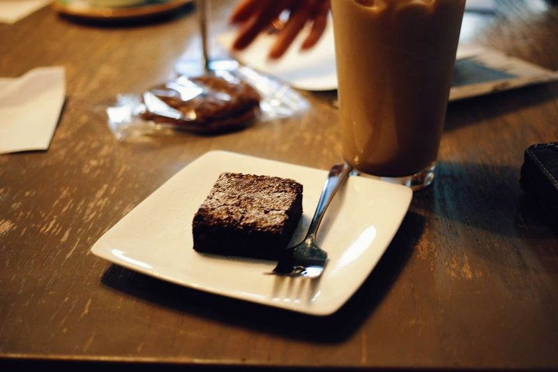
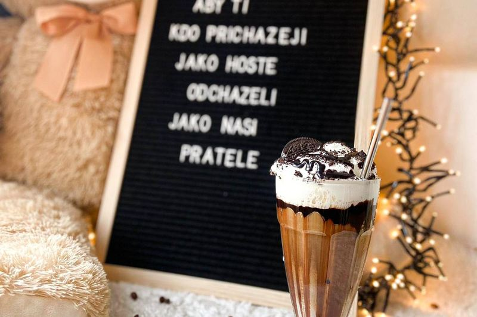
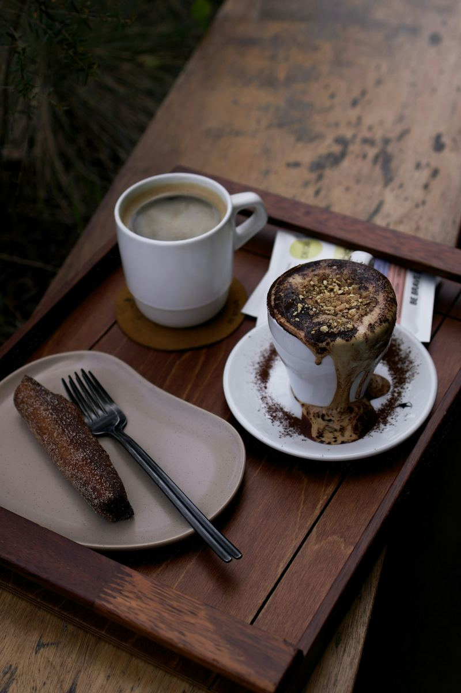
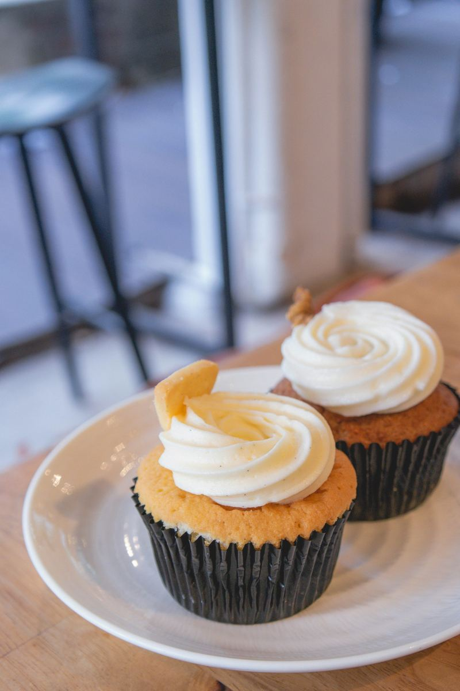
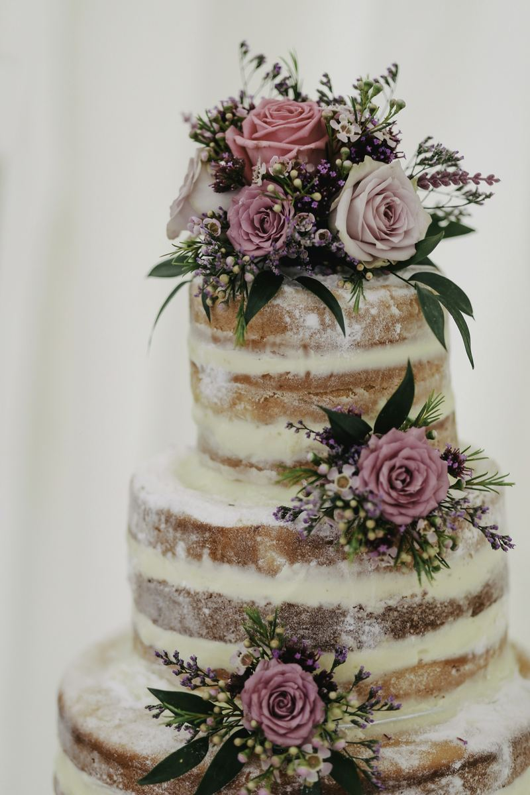

Zákusky a dezerty
Každý den čerstvé ve vitríně. Zákusek s sebou zabalíme.
Sladká Tříska na náměstí J. A. Komenského 31. Káva, domácí zákusky a dorty na objednávku. Otevřeno každý den od 9 do 18.
Otevřeno denně 9–18

Napište nápis a uvidíte ho na naší tabuli. Pak ho jedním klepnutím pošlete s objednávkou dortu.
Posedět se dá uvnitř i venku na náměstí.

Každý den čerstvé ve vitríně. Zákusek s sebou zabalíme.

Espresso, cappuccino a v létě ledová káva.

Narozeniny, oslava nebo jen tak. Domluvíme příchuť, velikost i nápis.



„Krásné uvnitř, příjemné posezení venku. Milá obsluha a velmi chutný dezert i ledová káva.“
host na Firmy.cz
„Velice příjemná klidná kavárna, chutné zákusky, kávy i další pitíčka mohu jen doporučit.“
host na Firmy.cz
„Útulná kavárna, rozumné ceny.“
host na Firmy.cz